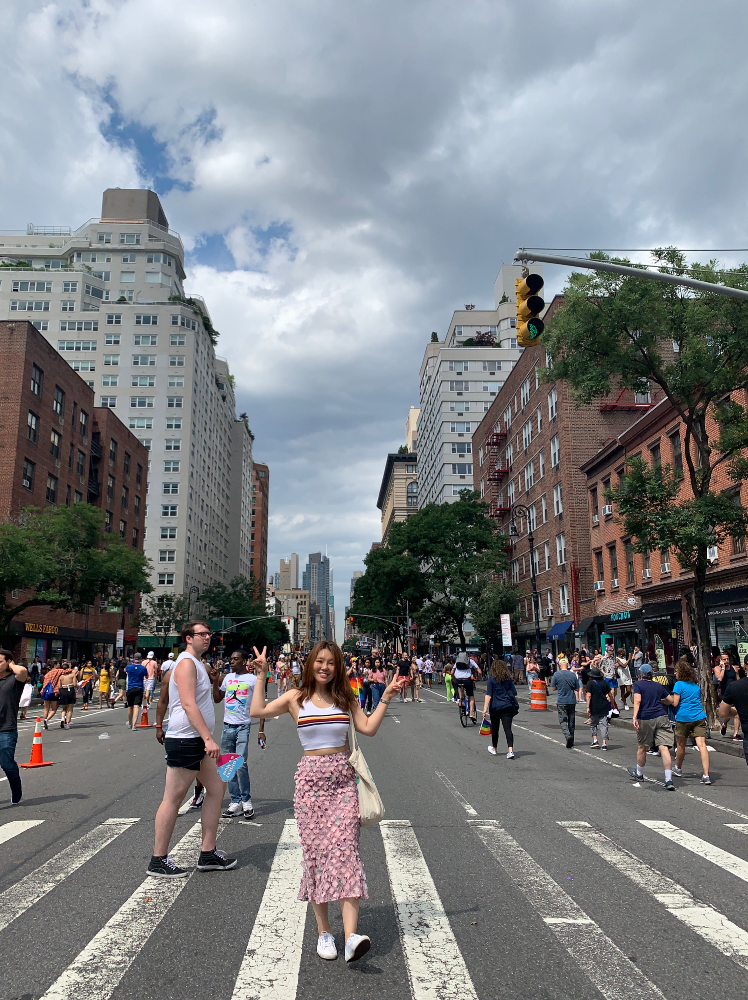

About Me
 I am a
visual designer, goes by Moon.
I recently graduated from Parsons The New School of Design.
I majored in a communication design and minored in both photography
and printmaking.
I love to work with analogue medium like film photography and
letterpress.
I have two cats, Iro and Aro.